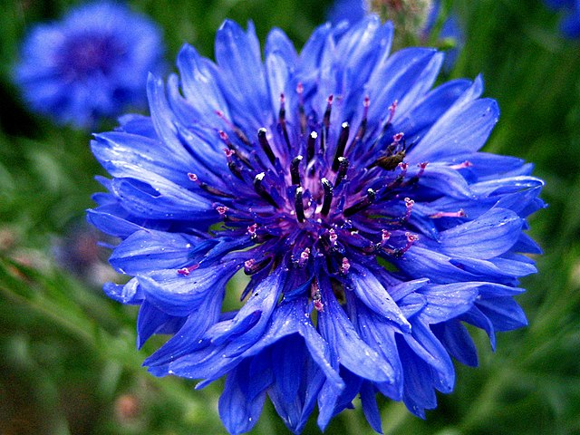
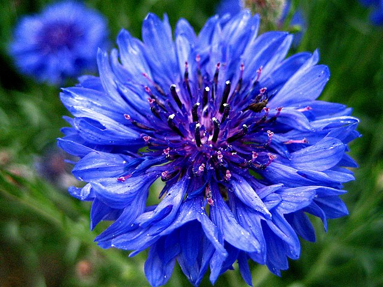
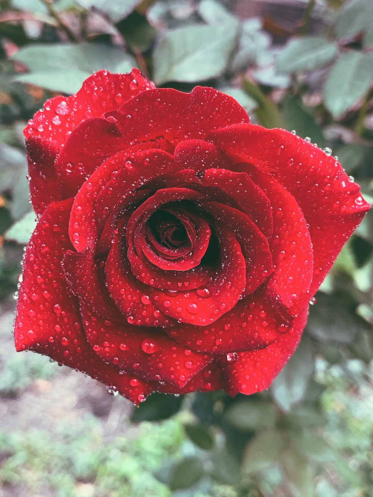
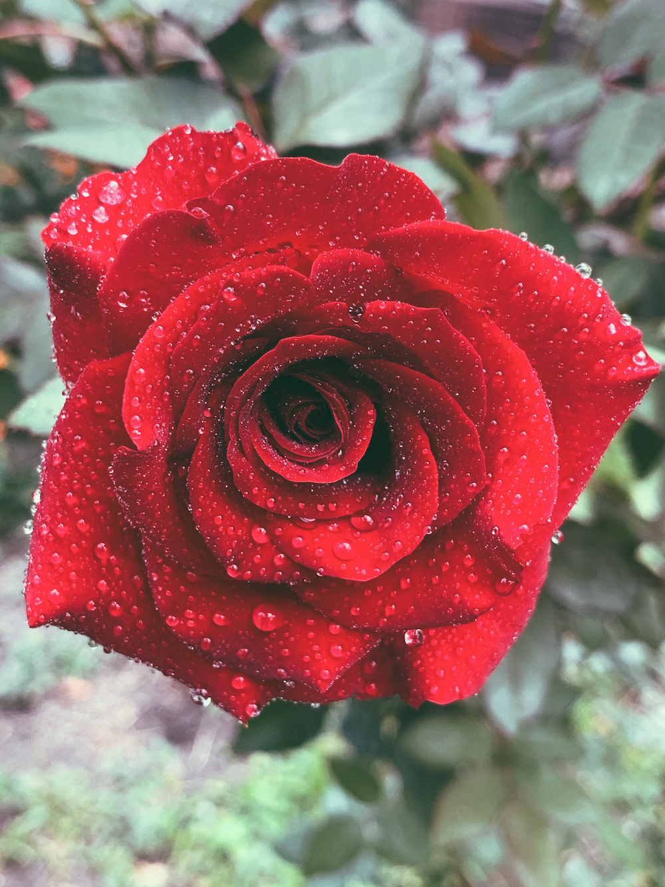

 

Gandhinagar is a planned city in the western Indian state of Gujarat. The Akshardham is a massive Hindu temple with ornate carvings and sculpted pillars.

Dandi Kutir museum traces the life of leader Mahatma Gandhi, who was born in Gujarat. South, along the Sabarmati River, the Indroda Nature Park has a zoo and botanical gardens, plus an adjacent dinosaur and fossil park.
flower, the characteristic reproductive structure of angiosperms. As popularly used, the term “flower” especially applies when part or all of the reproductive structure is distinctive incolour and form.

The tulip produces two or three thick bluish green leaves that are clustered at the base of the plant. The usually solitary bell-shaped flowers have three ...

The tulip produces two or three thick bluish green leaves that are clustered at the base of the plant. The usually solitary bell-shaped flowers have three ...